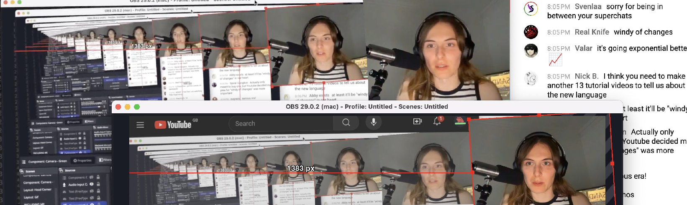

The weekly TODEPOND PONDCAST is for paying supporters only.
Please only listen / read if you've
paid
:)
Well well welcome back to the...
🐸 TODEPOND PONDCAST 🐸
What's new this week?
I did a second livestream! Another one! Except this time, it was over double the length, hitting eight and a half hours.
What I did was, was that I, I watched one episode of the Sandpond Saga, just one, and I did this repeatedly, to different episodes, until I had done it 38 times, until I had watched 38 different episodes, in order, so that I had watched through every single episode, the entire Sandpond Saga.
I did it! I watched from the very first episode to the very last episode (so far). I watched the whole Sandpond Saga from start to finish, I watched the whole thing and—
If you watch the whole saga from start to finish, with no gaps and no pauses, it already takes four and a half hours, which would already be longer than the first livestream. But when you factor in all the distractions and coffee breaks and what-not, it took eight and a half hours.
It was fun giving some behind-the-scenes stories and hidden meanings behind the videos. Thank you for everyone who watched along and took part in all the silly jokes!
The whole thing is available to watch, including the live chat, right here. Or I uploaded a short video of a short section that I enjoyed, if you're just looking for a taste. Watch it here.
Great news! My essay about Arroost got accepted for the LIVE conference at SPLASH.
This also means that the essay is finished, and I'm ready to release it. Here it is! Please enjoy reading. I put a lot of effort into it.
I'm overjoyed that the essay got accepted. I really wasn't sure if it would be. But the reviewers really seemed to "get it" and all three of them rated it five out of five.
I'm particularly pleased with Reviewer C's response. Look what they said:
I really enjoyed playing with Arroost. I like music and have been singing in choirs for a while but composition has always triggered emotional blockers for me. Meanwhile I found making music with Arroost quite freeing. I loved the lightweight nature of creating and sequencing tiny recordings. I thought it was cool how I was encouraged to keep things messy at the low level (eg the messy overlaps between neighboring recordings) yet inevitably the globally fixed beat would lead to cool structured polyrhythmic patterns at the high level. Thank you for your surprises, strange simulation.
I'm so so so pleased that Arroost had the desired effect on them. I particularly like the last line:
Thank you for your surprises, strange simulation.
I couldn't have asked for a nicer response.
Of course, the reviewers also made challenges, and critically questioned some aspects of Arroost. Again, for the second year running, I can't emphasise how high the quality of the feedback is from the LIVE reviewers. They engaged deeply with what I submitted, and it's clear that the goal of the feedback is to help with further exploration of the themes of the submission.
Over the coming weeks, I'll expand and respond to some of those challenges. Some of them have been very thought-provoking.
I have continued to work on the teaser trailer for the next video, Top 99 Ways To Make Sand. And viewers of the livestream may have even seen a teaser trailer of the teaser trailer.
Interestingly, I made some changes to the beginning section of the video specifically for the teaser. The changes were intended to hide spoilers from the eventual full video, but I actually like how it's turned out, so I might keep it like that, even after the teaser is released.
So yes, my attention is currently on the trailer. When that's done, I'll wrap up and publish Torn Leaf Zero. And when that's done, I'll get back to the video and finish it for real. The Top 99 Ways To Make Sand.
Thank you very much, reader, for your support. I can't do any of this without you, so I'm pleased that you're here, whether you're new, or you've been around for a long time... whatever you're doing... wherever you are in the world... I hope you have a great week. 🐸
Days since tode fell asleep:Back to the pondcast.